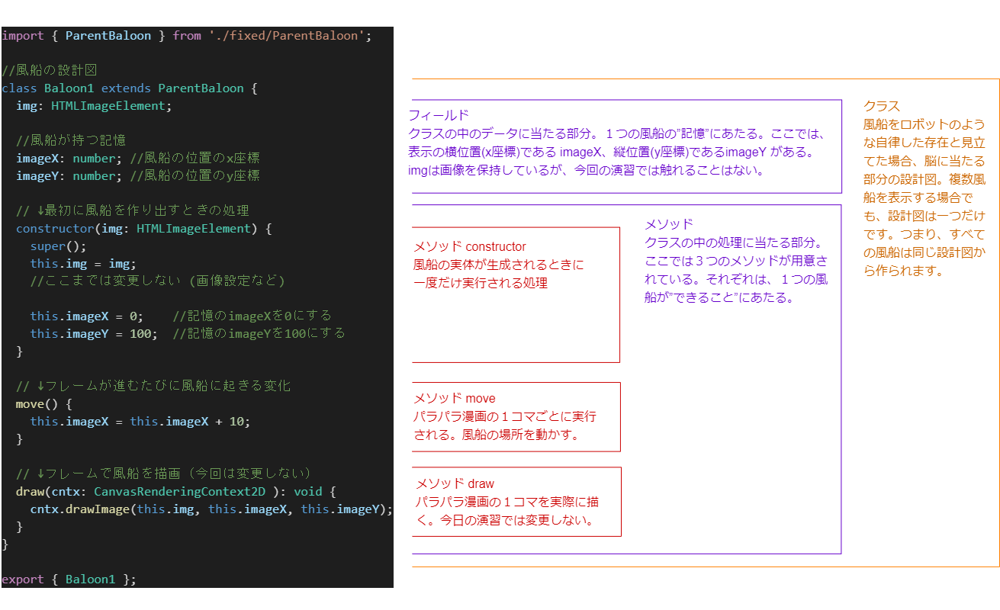
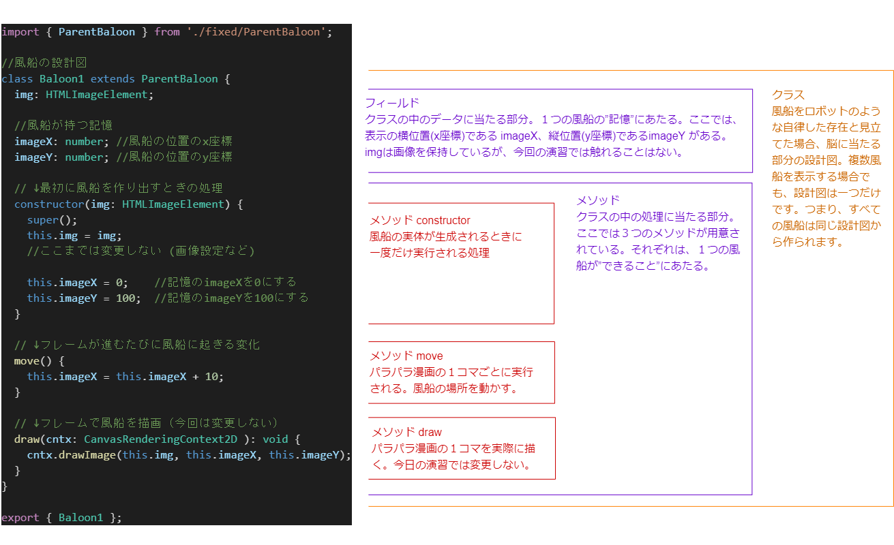

ソースコード baloon1.ts の構造
今日使用するプログラムでは、風船はロボットのように管理するプログラムに従って自律的に動きます。 自律的な動きと、そのために必要な記憶に当たる情報を、クラスという設計図にまとめて記述します。「記憶」と「考え・判断」がある脳を設計するようなものです。 こういうプログラムの作り方を「オブジェクト指向」といいます。
今日使用するプログラムでは、風船はロボットのように管理するプログラムに従って自律的に動きます。 自律的な動きと、そのために必要な記憶に当たる情報を、クラスという設計図にまとめて記述します。「記憶」と「考え・判断」がある脳を設計するようなものです。 こういうプログラムの作り方を「オブジェクト指向」といいます。
